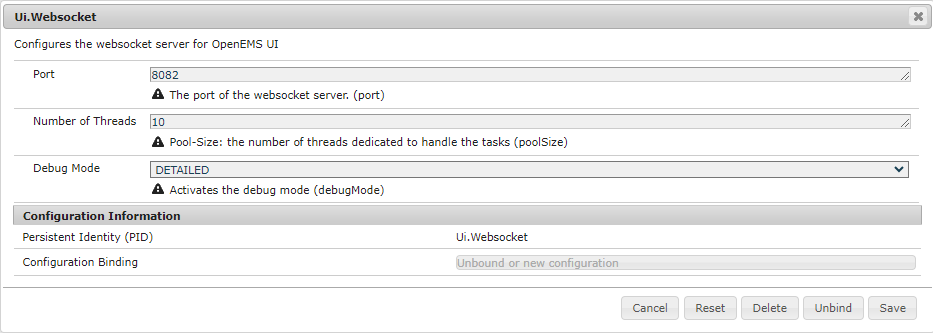

Getting Started
The Getting Started guide will show you how to run pre-built OpenEMS versions and complete basic configuration tasks. You will learn how to run a simulated PV + battery system in OpenEMS Edge, use OpenEMS UI to monitor your instance and optionally integrate the OpenEMS Backend for remote monitoring.
We also provide Docker images as a convenient way to try out OpenEMS if you are familiar with container environments. How to run these images will not be covered in detail in this guide. However, many of the configuration steps will be the same as described below.
| If you want to actively develop and extend OpenEMS, follow the developer guide to setup a development environment. |
|
This setup is intended for testing purposes only. It is not recommended to run OpenEMS in production this way. To use OpenEMS in production, choose one of the following options:
|
1. Install Java
OpenEMS requires Java 21 to run. If it is not pre-installed on your system, we recommend using Eclipse Temurin by Adoptium.
You can check the installed version by running the following command from your terminal:
java -versionThe output should look similar to this:
openjdk version "21.0.8" 2025-07-15 LTS
OpenJDK Runtime Environment Temurin-21.0.8+9 (build 21.0.8+9-LTS)
OpenJDK 64-Bit Server VM Temurin-21.0.8+9 (build 21.0.8+9-LTS, mixed mode, sharing)2. OpenEMS Edge
OpenEMS Edge is the actual energy management system running on your local device. It is the first component that you will set up.
2.1. Running the pre-built OpenEMS Edge
-
Go to the OpenEMS release page on GitHub and download the latest
openems-edge.jar. -
Open up your Terminal and go to the directory you downloaded the packages to.
-
Start OpenEMS Edge with the following command
java -jar openems-edge.jar
If OpenEMS Edge starts successfully, you should see the below warning in the log. That is perfectly fine! We will take care of this in a moment when we configure your new instance.
WARN [ms.edge.core.cycle.CycleWorker] [_cycle] There are no Schedulers configured!2.2. Basic configuration
-
Open the Apache Felix Web Console Configuration
Login with username admin and password admin.
 Figure 1. Apache Felix Web Console Configuration
Figure 1. Apache Felix Web Console Configuration -
Configure a Scheduler
The Scheduler is responsible for executing the control algorithms (Controllers) in order and defines the OpenEMS Edge application cycle -
Click on Scheduler All Alphabetically
 Figure 2. Configuration of All Alphabetically Scheduler
Figure 2. Configuration of All Alphabetically Scheduler -
Accept the default values and click Save
-
You created your first instance of an OpenEMS Component with ID "scheduler0". The log shows:
INFO [onent.AbstractOpenemsComponent] [scheduler0] Activate Scheduler.AllAlphabeticallyAdd any other OpenEMS Components in the same way.
Once everything is setup you can configure Components more easily via OpenEMS UI using the "Install components" feature in the Settings.
-
-
Configure debug outputs on the console: Controller Debug Log. The default values can be accepted without changes.
 Figure 3. Configuration of Controller Debug Log
Figure 3. Configuration of Controller Debug LogThe log shows:
INFO [onent.AbstractOpenemsComponent] [ctrlDebugLog0] Activate Controller.Debug.Logfollowed once per second by
INFO [ntroller.debuglog.DebugLogImpl] [ctrlDebugLog0] _sum[State:Ok]It is 'once per second', because the Cycle-Time is defined as "1000 ms" by default. Adjust the setting in the Core Cycle (Core.Cycle) component to change this. -
Configure the websocket Api Controller: Controller Api Websocket. The default values can be accepted without changes.
 Figure 4. Configuration of Controller Api Websocket
Figure 4. Configuration of Controller Api WebsocketThe log shows:
INFO [onent.AbstractOpenemsComponent] [ctrlApiWebsocket0] Activate Controller.Api.Websocket INFO [socket.AbstractWebsocketServer] Starting [Websocket Api] websocket server [port=8085]The Controller Api Websocket is required so that OpenEMS UI can connect to OpenEMS Edge locally.
2.3. Starting a simulation
-
Configure a simulated standard-load-profile datasource using Simulator DataSource: CSV Predefined. Select
H0_HOUSEHOLD_SUMMER_WEEKDAY_STANDARD_LOAD_PROFILEas theSource. Figure 5. Configuration of Simulator DataSource: CSV Predefined as standard load profile datasource
Figure 5. Configuration of Simulator DataSource: CSV Predefined as standard load profile datasourceThe log shows:
INFO [onent.AbstractOpenemsComponent] [datasource0] Activate Simulator.Datasource.CSV.PredefinedThe data source was configured with the OpenEMS Component ID datasource0which will be used in the next step as theDatasource-IDreference. -
Configure a simulated grid meter: Simulator GridMeter Acting. Configure the
Datasource-ID 'datasource0'to refer to the data source configured above. Figure 6. Configuration of Simulator GridMeter Acting
Figure 6. Configuration of Simulator GridMeter ActingThis time some more logs will appear. Most importantly they show, that the Grid meter now measures (simulates) a power value and the Consumption is derived directly from this value, because no PV system or energy storage system is configured yet.
INFO [onent.AbstractOpenemsComponent] [meter0] Activate Simulator.GridMeter.Acting INFO [onent.AbstractOpenemsComponent] [meter0] Deactivate Simulator.GridMeter.Acting INFO [onent.AbstractOpenemsComponent] [meter0] Activate Simulator.GridMeter.Acting INFO [ntroller.debuglog.DebugLogImpl] [ctrlDebugLog0] _sum[State:Ok Grid:1336 W Consumption:1336 W] meter0[1336 W]This setup causes the simulated grid-meter to take the standardized load-profiles data as input parameter. 'Acting' in the name 'Simulator GridMeter Acting' refers to the fact, that this meter actively provides data - in opposite to a 'Reacting' simulated device that is reacting on other components: for example the 'Simulator.EssSymmetric.Reacting' configured below. -
Configure a simulated reacting energy storage system: Simulator EssSymmetric Reacting. The default values can be accepted without changes.
 Figure 7. Configuration of Simulator EssSymmetric Reacting
Figure 7. Configuration of Simulator EssSymmetric ReactingThe log shows:
INFO [onent.AbstractOpenemsComponent] [ess0] Activate Simulator.EssSymmetric.Reacting INFO [ntroller.debuglog.DebugLogImpl] [ctrlDebugLog0] _sum[State:Ok Ess SoC:50 % Grid:1560 W Consumption:1560 W] ess0[SoC:50 %|L:UNDEFINED] meter0[1560 W] INFO [ntroller.debuglog.DebugLogImpl] [ctrlDebugLog0] _sum[State:Ok Ess SoC:50 %|L:0 W Grid:1502 W Consumption:1502 W] ess0[SoC:50 %|L:0 W] meter0[1502 W]The debug log now shows data for the battery, but the charge/discharge power stays at "0 W" and the state of charge stays at "50 %" as configured. Next step is to configure a control algorithm that tells the battery to charge or discharge depending on the power measured by the simulated grid meter. -
Configure the self-consumption optimization algorithm: Controller Ess Balancing. Configure the
Ess-ID'ess0'andGrid-Meter-ID'meter0'to refer to the components configured above.Figure 8. Configuration of Controller Ess BalancingThe log shows:
INFO [onent.AbstractOpenemsComponent] [ctrlBalancing0] Activate Controller.Symmetric.Balancing ... INFO [ntroller.debuglog.DebugLogImpl] [ctrlDebugLog0] _sum[State:Ok Ess SoC:50 %|L:593 W Grid:15 W Consumption:608 W] ess0[SoC:49 %|L:593 W|DebugSetActivePower:593 W] meter0[15 W]Values will differ slightly for you, but note how the Controller now tells the battery to discharge ( Ess SoC:49 %|L:593 W), trying to balance the Grid power to "0 W" (Grid L:15 W):
3. Run OpenEMS UI
| If you plan to actively develop on OpenEMS UI, you can now also setup a development environment for it using this guide. Otherwise you can use the prebuilt UI or deploy the OpenEMS UI as docker image. |
-
Make sure OpenEMS Edge is running locally and the websocket is running on port
8085. -
Open the UI URL
-
You should see OpenEMS UI. Log in as user "guest" by leaving the standard password and clicking the login button. Alternatively type "admin" in the password field to log in with extended permissions.
 Figure 9. OpenEMS UI Login screen
Figure 9. OpenEMS UI Login screen -
You should see the Energymonitor showing the same data as the DebugLog output on the console.
 Figure 10. OpenEMS UI Energymonitor screen
Figure 10. OpenEMS UI Energymonitor screen

4. Integrate OpenEMS Backend
Instead of having Edge and UI talk to each other directly, the communication can also be proxied via Backend.
4.1. Running the pre-built OpenEMS Backend
-
Go to the OpenEMS release page on GitHub and download the latest
openems-backend.jar. -
Open up your Terminal and go to the directory you downloaded the packages to.
-
Start OpenEMS Backend with the following command
java -jar openems-backend.jar
4.2. Configure OpenEMS Backend
-
Open the Apache Felix Web Console Configuration .
Apache Felix Web Console for OpenEMS Backend is started on port 8079 by default. This is configured using the org.osgi.service.http.portsetting in BackendApp.bndrun.Login with username admin and password admin.
-
Configure Edge.Websocket
The Edge.Websocket service is responsible for the communication between OpenEMS Backend and OpenEMS Edge. In the example we are configuring the
Port '8081'. This port needs to match with what we configure later in OpenEMS Edge. TheDebug Mode 'DETAILED'setting helps us to get some more details on the internal behaviour. Figure 12. Configuration of Backend Edge.Websocket
Figure 12. Configuration of Backend Edge.Websocket -
Configure Ui.Websocket
The Ui.Websocket service is responsible for the communication between OpenEMS Backend and OpenEMS UI. In the example we are configuring the
Port '8082'. This port needs to match with what we configure later in the OpenEMS UI environment file. We are again settingDebug Mode 'DETAILED'Figure 13. Configuration of Backend Ui.Websocket -
Configure Timedata
The Timedata service provider is responsible for holding the current and historic data of each connected Edge device. In the example we are configuring the Timedata.Dummy service. The default value for _Component-ID` can be accepted without changes, so just press Save. In a production system you would want to use a real implementation like Timedata.InfluxDB.
 Figure 14. Configuration of Backend Timedata.Dummy
Figure 14. Configuration of Backend Timedata.Dummy -
Configure Metadata
The Metadata service provider is responsible for authentication of Edge devices and Users connecting via UI.  Figure 15. Configuration of Backend Metadata.Dummy
Figure 15. Configuration of Backend Metadata.DummyIn the example we are configuring the Metadata.Dummy service. It takes no configuration parameters, so just press Save. In a production system you would want to use a real implementation like Metadata.File, which uses a static JSON file as input, or Metadata.Odoo, which uses the Odoo business software for authentication and IoT device management. This will require the Odoo-OpenEMS-Addon to be installed on your Odoo instance. See the OpenEMS Live-Demo Gitpod workspace for a full, production ready example configuration. For more information see → Gitpod Workspace -
Backend is ready
You should have seen some important log messages by now, that indicate that the OpenEMS Backend is ready to accept connections:
INFO [d.timedata.dummy.TimedataDummy] [Timedata.Dummy] Activate
INFO [d.metadata.dummy.MetadataDummy] [Metadata.Dummy] Activate
INFO [socket.AbstractWebsocketServer] [Ui.Websocket] Starting websocket server [port=8082]
INFO [socket.AbstractWebsocketServer] [Edge.Websocket] Starting websocket server [port=8081]4.3. Configure OpenEMS Edge
Next we will configure OpenEMS Edge to connect to the OpenEMS Backend Edge.Websocket service.
-
Switch back to the Apache Felix Web Console Configuration for OpenEMS Edge .
-
Configure the Controller Api Backend Component. The default values can be accepted without changes right now.
 Figure 16. Configuration of Controller Api Backend
Figure 16. Configuration of Controller Api BackendSome configuration parameters are still noteworthy here:
-
Apikey is used to authenticate this Edge at the Backend Metadata service. It has to be unique for each Edge.
-
Uri is set to
ws://localhost:8081. This defines an unencrypted websocket (ws://) connection to the local computer on port8081like we configured before for the Edge.Websocket. For a production setup you would want to use a TLS encrypted websocket with awss://uri.Once you press save you should see logs in OpenEMS Edge
INFO [onent.AbstractOpenemsComponent] [ctrlBackend0] Activate Controller.Api.Backend INFO [socket.AbstractWebsocketClient] [ctrlBackend0] Opening connection to websocket server [ws://localhost:8081] INFO [socket.ClientReconnectorWorker] [ctrlBackend0] Connecting WebSocket... [NOT_YET_CONNECTED] INFO [socket.ClientReconnectorWorker] [ctrlBackend0] Connected WebSocket successfully [0s] INFO [.controller.api.backend.OnOpen] [ctrlBackend0] Connected to OpenEMS Backendand OpenEMS Backend
INFO [s.backend.common.metadata.Edge] Edge [edge0]: Update version from [0.0.0] to [...] INFO [mon.metadata.SimpleEdgeHandler] Edge [edge0]. Update config: ... INFO [dgewebsocket.EdgeWebsocketImpl] [monitor] Edge-Connections: 1
-
4.4. Connect OpenEMS UI with Backend
(You need to have completed the OpenEMS UI guide for the following steps)
-
In the Visual Studio Code terminal stop the running
ng serve…by pressing ctrl + c -
Restart OpenEMS UI in 'local backend mode':
ng serve -c openems-backend-devOpenEMS UI can work both for local connections to OpenEMS Edge as well as cloud connections to OpenEMS Backend. The switch requires some basic parameters that are defined in 'environment' files ui/src/themes/openems/environments. The possible parameters forng serve -c…are defined in theui/angular.jsonfile. -
Open a browser at http://localhost:4200
-
You should see OpenEMS UI Login. Log in with any email / username and password.
Metadata.Dummy accepts any user/password combination. For production use, switch to a different Metadata implementation as described above.  Figure 17. OpenEMS UI Login screen
Figure 17. OpenEMS UI Login screen -
You will be presented an overview list of all connected OpenEMS Edge devices you have permissions for:
 Figure 18. OpenEMS UI Overview screen
Figure 18. OpenEMS UI Overview screen -
Click on OpenEMS Edge #0 to see the same live-view as before on the local connection.
 Figure 19. OpenEMS UI Live screen
Figure 19. OpenEMS UI Live screen
5. Next steps
Congratulations! You now have a working local simulation of OpenEMS Edge, OpenEMS Backend and OpenEMS UI. We encourage you to play around with it on your own to get more familiar with how everything works.
You may want to remove the simulated components and connect real devices to OpenEMS Edge. To do this, it is recommended to setup OpenEMS using the deployment guide mentioned at the top of this page. Follow the same approach that you used to add simulated components, but make sure your Edge instance has access to the devices and configure the components with needed parameters (i.e. IP address, etc.).
Alternatively, read the developer guide to learn how to set up a development environment for OpenEMS. This will allow you to implement your own device drivers and extend OpenEMS functionality.
6. Help
If you experienced any problems or doubts, please get in touch with us on the OpenEMS Community forum.